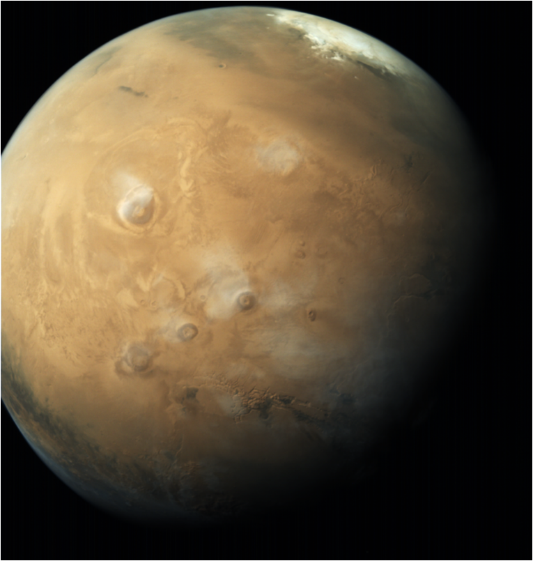

Vision - Harness space technology for national development, while pursuing space science research and planetary
exploration.
Mission
- Design and development of launch vehicles and related technologies for providing access to space.
Design and development of satellites and related technologies for earth observation, communication, navigation,
meteorology and space science.
Indian National Satellite (INSAT) programme for meeting telecommunication, television broadcasting and
developmental applications.
Indian Remote Sensing Satellite (IRS) programme for management of natural resources and monitoring of
environment using space based imagery.
Space based Applications for Societal development.
Research and Development in space science and planetary exploration.
Objectives -
Operational flights of Polar Satellite Launch Vehicle (PSLV).
Developmental flight of Geo-synchronous Satellite Launch Vehicle (GSLV- Mk II).
Development of heavy lift Geo-synchronous Satellite Launch Vehicle (GSLV-Mk III).
Design, Development and Realization of Communication Satellites.
Design, Development and Realization of Earth Observation Satellites.
Development of Navigation Satellite Systems.
Development of satellites for Space Science and Planetary Exploration.
Earth Observation Applications.
Space based systems for Societal Applications.
Advanced Technologies and newer initiatives.
Training, Capacity building and Education.
Promotion of Space technology.
Infrastructure / Facility Development for space research.
International Cooperation.
